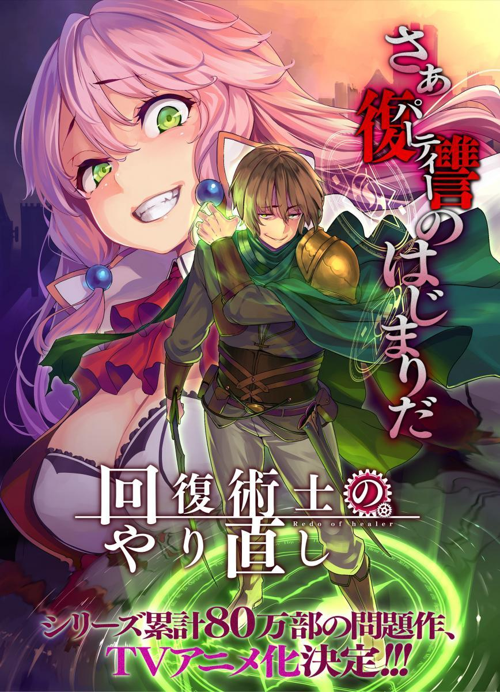

Kaifuku Jutsushi
- Tipo: Serie
- Genero: Ecchi
- Emitido: Ene 13 de 2021 a Mar 31 de 2021
- Estado: Concluido
Los magos curadores no pueden luchar solos". Keare, que estaba obligado por este conocimiento común, fue explotado una y otra vez por otros. Un día,
se dio cuenta de lo que había más allá de la magia curativa y se convenció de que un mago curativo era la clase más fuerte. Sin embargo, cuando se dio cuenta de ese potencial,
se vio privado de todo. Por lo tanto, usó magia curativa en el mundo mismo para retroceder cuatro años, decidiendo rehacer todo.
Esta es una historia heroica de un mago curativo que se convirtió en el más fuerte al usar el conocimiento de su vida pasada y la magia curativa.